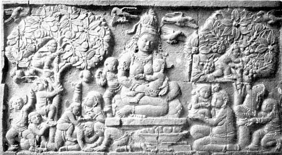
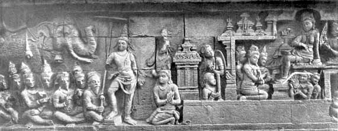

T
he Golden Age of Hindu-Javanese ArtBY T. N. RAMACHANDRAN, M.A.
The Dieng Plateau
The Dieng plateau in Central Java was, according to a Javanese tradition, the first part of the isle created and destined to remain longest above water in the island's final destruction and submersion (deluge). It is nothing but a huge crater. According to Scheltema the name of the place is derived from the fact that "nature, in her most mysterious mood, exercises here a charm of a peculiar character, well-expressed by the name, according to the Javanese tradition from adi aeing, i.e., marvelously beautiful.l But according to Dr. Stuart (an authority quoted by Scheltema in the same page) the name is derived from dihyang, a name found by him in old records.
Once a lake of seething lava, the plateau lies enclosed by five mountains, the Prahu, Sroyo, Bismo, Nogosari and Jimat, 2050 metres above the sea-level. In the plain one sees nothing but ruins which continue up the slopes of the hills, even up to the summit of the Prahu. "With its mofettes, solfataras, steam-holes, mud-geysers, sulphorous lakes, its . . . chasms, last but not least, its notorious valley of death, the Dieng is the region above all others in volcanic Java, of miracles that expound the antagonism between fratricide life and death on our turbulent planet, which continuously prepares for or recovers from chasms of generative destruction."2
The river Serayu takes her source here and has, according to the Javanese tradition, Pandava association. It is said Bhima dug deep here, while Arjuna determined the river course and directed the water from the hills to the sea, thereby obtaining the realm of ‘Ngastino’; and the belief is that a bath in the river here "under the pohoon chemeti, the weeping willow of Bimo's fountain" will guarantee immortality to the bather. Stone posts seen in the ruins today are said to have been used by Arjuna to tether his elephants, and hollows in the stone as temporary cattle-sheds.
Mighty debri consisting of layers of ashes, bronze and gold rings, bracelets, anklets and other personal ornaments, and old walls, acqueducts, staircases, steps, foundations of secular buildings, etc., prove the existence in the remote past, though not "of a Javanese Benares, minus the Ganges" but of a culture-home with a setting of unceasing volcanic activity, that should have demolished it, all of a sudden. Because of volcanic troubles it is apparent that the population of the Dieng lived in wooden houses, built on substructures of stone.3
Among canals and ditches of the place, mention may be made of the Guwa Aswotomo (Asvatthaman), some twelve centuries old, which still relieves the plain of its superfluous water. According to a Javanese tradition this was a subterranean passage dug by Asvatthaman, the son of Drona, on his expedition to the Dieng to annihilate the Pandavas, who, on approaching Arjuna's residence pushed his way up to the surface, to see how far he had yet to continue his underground march.
The surviving architectural monuments on the Dieng plateau represent the earliest Hindu temples in stone and have a superficial similarity to the "rathas" at Mahabalipuram. Whether developed from the older school of West Java, or in connection with renewed immigration, the architectural forms "show clear analogies with those of the Gupta, Pallava and early Chalukya of the Indian mainland" and in the opinion of Dr. Coomaraswamy and Mr. Gangoly they are "more Indian than Javanese, and the local factor is only apparent, if at all, in a certain free development of the ornament itself not in its motifs or application." The Dieng plateau was a place of pilgrimage. The temples are small and mutually independent. Only eight 4 are now found of which six are important. They are Chandis Arjuna, Srikandi, Puntadeva (Dharmaraja), Sembhadra and Ghatotkacha and Bhima. This group is dedicated to Siva and dates from about the seventh century. The main characteristic feature of its style is a box-like or cubic construction with vertical and horizontal lines strongly emphasised. Each temple consists of a single cell approached by a vestibule projecting from the wall, the sides being divided into pilasters and niches or sculptured panels. The tour over the cell is in series of diminishing storeys, best illustrated in the Chandi Puntadeva. The steps are flanked by sloping balustrades with effigies of makaras as in South Indian temples. A grotesque kirtimukha (the "kalamakara," or the "vanaspati" of the Dutch authors) crowns the niches and doorways, and this becomes a common and significant decoration.
The Chandi Bhima is different, with its pyramidal tower containing a series of window-like niches, with human heads, corresponding to the Pallava kudus. Much finer and delicate in conception and execution is a series of panels of Brahma, Vishnu and Siva from the Chandi Srikandi, while another figure, that of a dvarapala with staff in hand, is obviously related to Pallava dvarapalas, the coronet and the dress being almost identical. Other figures that have been described by Mr. Gangoly in his Art of Java, (pp. 14-16), appear to recall, as he says, South Indian types in details of iconography, dress and ornaments as well as in the general plastic feeling. These Chandis 5 do not seem to follow any known Indian prototype. (No temple of the North Indian or ‘Indo-Aryan’ type has been found in Java). If we compare the elevation of a South Indian vimana with that of Chandi Arjuna, we notice an obvious similarity in the lower parts below the pinnacle, the tower being very much divided in diminishing stages like the South Indian temples. This establishes a kinship with a difference, particularly in the shape of the kalasa or pinnacle. Probably they represent types formerly done in wood. According to Campbell, "it was in the Dieng plateau there lived the last of the Hindu families descended from the first Hindus who visited and colonised Java."
CENTRAL JAVA UNDER THE SAILENDRA
MONARCHS OF SUMATRA
The history of Java under the Sailendra monarchs is virtually the history of the spread of Mahayana Buddhism in the isle under the patronage of these monarchs. For its early history we have to depend on Chinese records. We saw already that about the year 414, when Fa Hian visited the isle, the isle knew not much of the law of the Buddha, heretics and Brahmans alone flourishing then in the island. How then did Buddhism step in?
In 423 A. D., Gunavarman, a prince of Kashmir, renounced the throne of Kashmir much as the Buddha did, and to avoid the importunities of his subjects left Kashmir for Ceylon where he was hailed as a great spiritual leader. Then he left for Java where he introduced Buddhism in the following manner: - "The night before his arrival the mother of the king of Java dreamt that a holy man, mounted on a flying cloud, was coming to her country. When Gunavarman arrived the next morning, the king's mother was converted by him to Buddhism. At her bidding, her son, the king of Java, also accepted the tenets of Buddhism. . . . A monastery was erected by the king in honour of Gunavarman who, however, in his ardent desire to propagate the true faith left for China soon afterwards, in a ship belonging to a Hindu merchant of the name of Nandi."6
From Chinese sources we learn that a Hinduised kingdom of Palembang, formerly known as "Srivijaya" ("Sanfotsi" or "Che-li-fo-chi" of the Chinese records) existed in Sumatra in the fifth century A. D. The researches of Drs. Coedes and Krom have thrown light on the history of these Sailendra monarchs of Palembang, who appear to have ruled over a mighty empire extending over the Malay-Archipelago besides Sumatra. In the seventh century their kingdom included the isle of Bangka also, while in the succeeding century it extended as far north in the Malay Peninsula as the Bay of Bandon.
From the accounts of the Chinese pilgrims such as Fa Hian, Hiuen Tsiang and I-tsing we learn that there was then a trade route, known as the "Southern Sea-route" between China and India ‘by way of the Condore isles, Sumatra, Java, the Straits of Malacca, the coast of Burma and Arakan, to Tamralipti (Tamluk), or else by the more adventurous way of Ceylon from Quedah’.7 I-tsing gives us details of this route by remarking, ‘. . . . going west 30 days from Quedah, merchants used to arrive at Nagavadana (Negapatam), whence after two days’ voyage they reach Ceylon’. 8 It will thus be seen that maritime commerce between Eastern India and the Malay Peninsula–now represented by the British India Service between Negapatam and Penang–is extremely ancient.
I-tsing stayed in Srivijaya for seven years (688-695 A. D.) and bears testimony to the strength of the Sailendra monarchs. According to him Srivijaya was a great centre of Sanskrit learning, Chinese monks desirous of visiting India on a pilgrimage being required to halt there and learn Sanskrit before visiting India. The king of the country possessed many ships that sailed between Palembang and India and it was in fact in one of the ships of this king that I-tsing left Sumatra for Tamralipti (Tamluk) in India.9 This kingdom appears to have embraced Mahayana form of Buddhism subsequent to the visit of I-tsing to the isle, for we find the pilgrim describing the place as a great centre of the Hinayana.
Some time in the early half of the eighth century Srivijaya should have become a stronghold of Mahayana Buddhism, for we find the Sailendra monarchs to be zealous patrons of this faith. Wherefrom did Srivijaya get its Mahayanism? The answer is given by Dr. Krom in his ‘De Sumatransche periode der Javaansche Geschiedenis.’ According to him Dharmapala, the famous guru of Nalanda, a stronghold of Mahayanism, spent his last years in Sumatra, which appears to have been in close touch with Magadha and Bengal. We know that Mahayana tinged with Tantrayana spread in Bengal and the Magadha like wild-fire under the Pala rulers. And it is indeed surprising to note that the same is the case with the Mahayana that we find in Sumatra, Java and Cambodia. This proves that Sumatran Mahayanism was derived from the one found in Bengal and the Magadha under Pala rulers.
Epigraphy confirms this suggestion. A copper plate grant of the ninth century A.D., found in Nalanda itself in 1921, belongs to Devapala of the Pala dynasty and records that "Devapala being requested by the illustrious Maharaja Balaputradeva, king of ‘Suvarnadvipa’ (Sumatra), granted five villages for the upkeep of the monastery built at Nalanda at the instance of the king of ‘Suvarnadvipa’ 10 According to this record the mother of this king of Sumatra was Tara, daughter of King Dharmasetu of the "chandra-vamsa" and queen of ‘the mighty king who was the son of the renowned ruler of "Yavabhumi"–the ornament of the Sailendra dynasty (of Srivijaya).’ The king is described as building at Nalanda a monastery, white in colour with a series of stuccoed and lofty storeys, for the assembly of monks, with his mind ‘attracted by the manifold excellences of Nalanda and through devotion to the Son of Suddhodana.’
The earliest inscriptions of the Sailendras in Java are also written not in the South Indian "Pallava grantha" script which was the case with the earlier Javanese records but in a North Indian script "almost exactly like that of the ninth century inscriptions discovered at Nalanda." According to Dr. B. R. Chatterji this North Indian script is more akin to Bengali than to the Deva-Nagari characters. One of the Chandis in Java, the Chandi Kalasan, (to which we shall come presently), reported as the first monument of Sailendra glory, has an inscription in this North Indian script. This and other indications led Drs. Kern and B. R. Chatterji to the conclusion that "if the early Saiva cult in the Archipelago and Indo-China originated from South India, the later wave of Mahayana Buddhism should be traced to the influence of Magadha and Bengal.11 As the inscription from Chandi Kalasan speaks of the erection of the shrine in honour of the Mahayana goddess Tara, in 778 A. D., by the order of the Sailendra king of Srivijaya, and ‘in his Own kingdom’, it is evident that Central Java came under the Sailendra rule by at least the second half of the eighth century and was probably ruled by them, by their viceroys, for over a century (732-860 A. D.).
The great Bengali Buddhist monk, Dipankara, (Atisa, 980-1053 A. D.) who is said to have done much propaganda work for Buddhism in Tibet is, according to the "Phyag-sorpa," a Tibetan work of Kalyana Mitra (middle of the thirteenth century), said to have visited Sumatra. His visit may be described as follows: - "In the company of some merchants Dipankara (Atisa) embarked for Suvarnadvipa in a large vessel. . . At this time Suvarnadvipa was the headquarters of Buddhism in the East and its High Priest Dharmakirti was considered to be the greatest scholar of his age. Dipankara (Atisa) resided there for a period of 12 years in order to master completely the pure teachings of Buddha, of which the key was possessed by Dharmakirti alone. He returned to India accompanied by some merchants in a sailing vessel visiting Tamradvipa (Ceylon) and the island of forests on his way." 12 Dipankara's advent in the isle is attested to, according to M. Foucher, 13 in a Nepalese manuscript with miniatures dating from the eleventh century, the first miniature in which has the label ‘Dipankara in Yavadvipa.’ ("Yavadvipa" meant Sumatra as well as Java).
The name Srivijaya (vishaya) Occurs in some of the Chola records of the tenth and eleventh centuries. As a result of maritime commerce between Eastern India and the Malay Peninsula, already alluded to, there existed at Negapatam, 14 in the days of the Cholas (871-1250 A. D.), a colony of Malay Buddhists, particularly from Srivijaya, who appear to have given a new lease of life to the declining Buddhism of South India by erecting Buddhist temples at Negapatam with the aid of subsidies granted by their kings, the Sailendras. Being patronised by the Chola monarchs, they built at least two temples at the beginning of the eleventh century. These temples were called "Rajaraja-perum-palli" and "Rajendra-chola-perum-palli" or "Chola-perum-palli", and the smaller Leiden grant dated in the 20th year of the reign of Kulottunga I (1090 A. D.) records gifts to both of them.15 The former was named after Rajaraja I, and the latter after Rajendra Chola I, during whose reigns they were respectively built. The former was evidently the chapel of a vihara, known as the "Chudamani-varma-vihara," which including its chapel was built during the reign of Rajaraja I by Sri Maravijayottunga-varman, son of Chudamani-varman of the Sailendra dynasty, King of "Kataha" (Kadaram) and Srivishaya or Srivijaya, and dedicated to the memory of his father. An ancient tower of three storeys which had for long served as a land-mark for vessels approaching the Negapatam roadstead, and was known as the "Puduveli gopuram" or the "China pagoda" and which was pulled down by French Jesuits in 1867 A. D., evidently represents one of the temples above mentioned. Such storeyed temples being unknown in South India, while they prevail in a large measure in Java and in the other isles of the Archipelago, it may be presumed that the "Puduveli gopuram" derived its architecture from either a Sumatran or Javanese temple and was probably the one built by the Sailendra Maravijayottunga as the chapel of the "Chudamani-varma-vihara."
Since 1856, bronze Buddhist images, most of them votive offerings, have been accidentally discovered on the site of this vihara, which should have been a place of pilgrimage, as proved by the later Kalyani inscriptions. 16 The earliest find was in 1856 and consisted of 5 small idols. The next find was in 1926, when a huge collection of 294 images was found very near the spot where stood till 1867 the "Puduveli gopuram." 17 Most of the images are of Buddhas of the usual conventional type; a few represent Avalokitesvara, Tara, Jambhala and Vasudhara. They all belong to the Mahayana, the faith adopted by the Sailendras, to whom we owe most probably the introduction of this faith at Negapatam. A study of these images and their inscriptions places a few of them in the early Chola period (871-1070 A. D.) and a large number of the rest in the later Chola period (1070-1250 A. D.)
Rajendra Chola's inscriptions speak of his having conquered Srivijaya by sending a fleet into the midst of the surging ocean and seizing Samgram-vijayottunga-varman, ruler of Kadaram (Kedah)18 This conquest by the Chola king was a temporary one, for in a record of the Chola Vira-Rajendra, dated in the seventh year of his reign, (about 1068 A. D.), it is said that after having conquered Kadaram he was pleased to give it back to its king "as it was too far off beyond the moving sea." 19 A few years later the ambassadors of Srivijaya report at the Chinese court that it was Srivijaya that claimed then suzerainty over the Cholas.
During the short rule of the Sailendras over Java, a Sailendra king is said to have popularised the study of Sanskrit by editing himself a Sanskrit glossary in the "Kavi" language. We owe to Chau Ju Kua, a Chinese Customs officer (1225 A. D.) the following information about this kingdom: -
"Sanfotsi (Srivijaya) is situated between Cambodia and Java. . . . The people are skilled at fighting on land and water. . . In writing official documents they use foreign characters (the Chinese chronicle of the "Sung" dynasty quotes this paragraph but substitutes "Sanskrit" for "foreign characters"). . . There is in Sanfotsi a golden image of Buddha called the ‘Hill of gold’ . . . When a person is . . . ill he distributes among the poor a sum equivalent to his weight in silver (tulabhara?–italics ours.) . . . this country is a great shipping centre." 20 He mentions 15 States as dependencies of Srivijaya, and curiously enough Ceylon is one of them. Ferrand points out 21 that 300 years before Chau Ju Kua, the Arab Masudi had mentioned in his "Prairies of gold" a maharaja who was the king of the island of Zabaj (Srivijaya), . . . of Sirandip (Ceylon) etc.’
Central Java seems to have been recovered from Sailendra domination in the tenth century by the Hindu Javanese princes of East Java, and antagonism between the two powers did continue in the eleventh century. It was not till Srivijaya was conquered, though temporarily, by the Chola Rajendra I that Java recovered her independence, and what was called "restoration of Java" did take place. In the time of Chau Ju Kua (1225) Java had come under the Singasari house. But it was only when the Majapahit successors of the Singasari dynasty (1294-1478) took a systematic conquest of the Archipelago that Srivijaya fell. In 1377 this glorious kingdom (Srivijaya) fell for good and the country came under Majapahit subjection. The Javanese neglected the country to destroy the rival, and allowed Chinese merchants and pirates to settle in it, so much so that the whole country became Soon a waste land.
We have now to compare this sad picture of Srivijaya under Javanese supremacy with the glorious condition of Central Java under the Sailendra rule in the eighth and ninth centuries A. D. (732-860 A.D.). Let us now consider the important monuments of the Sailendra period. Chandi Kalasan, dated 778 A.D., is an invaluable landmark, being the first surviving Buddhist monument on Javanese soil. It was erected by a local ruler Kariyana-Panankaranah at the instance of the guru of the Sailendra king and dedicated to Tara. Chandi Kalasan follows the Dieng type in its general design and is characterised by elaborately carved "kirtimukhas" and makaratoranas "obviously derived from early Chalukyan architecture." 22 A little to the north is another contemporary Sailendra building known as Chandi Sari of the storeyed-vihara type with many shrines and monastic apartments, which was probably a monastery attached to Chandi Kalasan.
The next important Buddhist temple is Chandi Mendut in Kedu, a little later than Kalasan, which resembles the above-said temples, but there are no side chapels, and the inner walls of the open vestibule are decorated with reliefs representing Hariti and Panchika. Inside the sanctum are three colossal statues of the Buddha seated, with two Bodhisattvas, which "represent the highest level of classic Indo-Javanese art". 23 They recall kinship with Gupta sculpture, though they actually supersede in quality the surviving remains of the Gupta Buddhas.

Hariti, Chandi Mendut, late eighth century
Plate I shows a bas-relief from Chandi Mendut representing the Buddhist Madonna Hariti, she is a protectress of children and is worshipped in Northern India by bereaved parents, while in Nepal she is believed to prevent small-pox. She would appear to occupy a position similar to the South Indian Mari-Amman or "Ammavaru." According to Buddhist accounts she was at first an ogress (yakshini), a cannibal demon, devoted to devouring all the children of Rajagriha. She had herself 500 children, and she had nearly swallowed 499 of them, when Gautama Buddha rescued the last one, Pindola, by hiding the child under his begging-bowl, and causing her to repent for her evil ways, converted her into a nun (bhikshuni), while the Buddhist priests assured her her daily food. From the accounts of the Chinese pilgrims, Hiuen Tsiang and I-tsing (seventh century) we learn that her statues were always found in the porches or refectories of the Buddhist monasteries of North India, where she was adored as ‘Giver of children,’ and she was invariably placed opposite the god of wealth, Jambhala or Kubera. In Java she was likewise located. This feature led Waddell to think that "Hariti is none other than a form of Vasudhara, goddess of abundance, and consort of Kuvera, god of Wealth."24 She was called in China ‘Giver of sons’ (Sung-tse).
In the Gandhara school she is seen in flowing garments without a covering for the head, and holding a child, with an army of children climbing about her. Sometimes she holds a pomegranate, for the Buddha is said to have cured her from her cannibalism by giving her a diet of pomegranate, ‘the red fruit being supposed to resemble human flesh!’ The feature of the flowing garments varies with the country. Sometimes it is shown, sometimes not. She is invariably represented seated, offering her breast to the child in her arms, much as she is seen in our illustration. 25 Here she wears an ornate mitre-shaped head-dress, carries a child in her arms to which she is offering her breast, while fourteen children are about her, some playing, some plucking fruits from two trees, one on either side of her, while birds are fluttering above her, flying from one tree to the other, evidently disturbed by the children's revelry. The "flowing-garment" that she is expected to have is not to be seen.
The Chandi Mendut, Kalasan and another the Chandi Pawon, furnish excellent preparations for approach to the supreme monument of Buddhism in Java–in fact in any part of Asia–Chandi Borobudur with which they are related stylistically.
THE BOROBUDUR
Its date has been determined on stylistic and palaeographic evidence to fall between 760-850 A.D. Scholars are divided in opinion as to what it represents, a vihara, a chaitya or a stupa. If a stupa, it is unique in its form and design, unlike any other stupa known hitherto. According to Fergusson "the fundamental formative idea of the Borobudur is that of a dagoba."
The stupa is originally a memorial that owes its importance to the relics it enshrines or the events it commemorates. Slowly it became a symbolic structure, symbolical of Buddhism and ‘its creed of salvation.’ Likewise the Borobudur was intended to be a symbolic building. Generally stupas were built as massive domes crowned by a pinnacle, resting on a square pedestal or drum. They were invariably erected on level ground; not so, Borobudur.
A rounded hill in the Kedu plain has been terraced and clothed with stone, the result being a truncated terraced pyramid of seven storeys supporting a relatively small central stupa surrounded by 7'2 much smaller perforated stupas arranged in three concentric circles; a stairway provided with makara-torana gateway in the middle of each side of the pyramid leads directly to the upper storeys with the stupas (frontispiece). The ground plan of the six lower terraces is square with re-entrant corners, while that of the three upper terraces is circular. The perforated stupas enshrine images of Dhyani Buddhas. Each of the four lower terraces is a perambulation gallery on the walls of which are long series of reliefs illustrating the life of the Buddha according to the Lalita vistara, and stories from the Divyavadana, Jatakamala, the Gandavyuha and other sources. The intention of the designer of this monument, whose name, according to an old tradition, is given as Gunadharma was that the worshipper, while making his pradakshina of the building, should be instructed ocularly in the whole doctrine of Buddhism, according to the system of the Mahayana. "In accordance with the cosmic significance of the building, the galleries are richly decorated, but the platforms which, in contrast to the phenomenal world below, are intended to represent the region of formlessness, have been left unadorned".26
The total number of sculptured panels along the four galleries amounts to about 1300 which, if placed end to end, would extend for over three miles, and they bespeak an infinitely luxurious experience. They open out an encyclopedia of edifying Buddhist legends, told with moving eloquence and in the plastic language of a singularly chaste and refined diction, elaborated with rich and exquisite imagery. Incidentally the "speaking pictures" afford glimpses into the details of the life pictured therein. "Humble dwellings, pompous palaces, court scenes and assemblies, temples, cloisters, carriages, ships, household implements, tools, utensils for temple ceremonial, flora and fauna–everything in fact, is here pictured in stone in eloquent and overwhelming profusion, yet with chaste and, refined restraint." 27 In contrast with the moving compositions of stirring anecdotes and absorbing stories, are the static images of a series of Buddhas and Bodhisattvas, "dreaming their eternal dreams in the apotheosized gesture of serenity and repose" (dhyana). Though strictly following the iconographical models of India they overshadow anything of the type found in Indian Buddhist sculpture, in sheer beauty of craftsmanship and conception. It is as if Indian sculptors achieved the summit of their perfection on the congenial soil of Java. Here we notice the entire absence of the local element. The types depicted in the various galleries are all Indian, following closely the models of the Indian Peninsula. In short "the whole artistic phraseology, the language of the plastic, is characteristically Indian in body as well as in spirit." 28 In fine the Borobudur (many Buddhas) is a monument of Sailendra culture done in the very height of Sailendra glory; it is "like a ripe fruit matured in breathless air; the fullness of its forms is an expression of static wealth, rather than the volume that denotes the outward radiation of power."29

King Suddodhana on his way to meet Queen Maya in the Asoka-wood.
(From Chandi Borobudur, late eighth century)
Plate II contains an interesting relief from the Borobudur representing the following incident from the Life of the Buddha as recorded in the Lalita vistara, a work of Northern Buddhism: -
Queen Maya, the wife of King Suddhodana dreamt that a white elephant with six tusks had entered her womb, and waking up from her slumber, she made haste to inform her lord accordingly. "Then Queen Maya rose up from her splendid couch, wearing ornaments and soft garments . . . and surrounded and followed by her company of women she descended from the top of the magnificent palace and betook herself to the asoka-wood. As soon as she had entered it, as she wished, she dispatched a messenger to king Suddhodana: ‘May it please your Majesty to come, the queen desires to see you’". When the king heard this he left his throne and repaired to the asoka-wood accompanied by citizens, councillors, attendants and other relations. ‘But when he was come there he became incapable of entering the asoka-wood. He seemed to have become too heavy. Pausing at the entrance he spoke after a moment's reflection. . . . "Never can I recollect, even when leading my soldiers, that ever I felt my body so heavy as now. I am not able to enter the abode of my own family; what will overtake me here and to whom can I turn for advice?" 30
The queen appears to be in the palace and not in the asoka-wood of the text; she is sitting on a raised seat (throne?), an attendant gently swaying a fan behind her, while other women are kneeling around. Two guards can be seen on the left of the building, in which the queen is seated. In front of what seems to be a pavilion or small temple can be seen two persons, one of them kneeling respectfully before the king on the left, and probably inviting the king into the building where the queen is seated, on behalf of the queen. Or is he the messenger that the queen is said to have sent to bring the king to her? As for the king, a dignified figure standing in the centre, with the royal ‘chhattra’ over him, he is evidently musing over the strange feeling of his. His suite can be seen sitting on the left facing him while his mount, the elephant, with the mahout drowsing lazily on its back, stands in the back-ground in all its majesty.
Of other Buddhist temples of the ninth century in Central Java mention may be made of Chandi Sewu (1000 temples) now in ruins, which was a development of the Kalasan type, decorated with arches and niches rather lavishly. The monuments of the Sumatran period are not exclusively Buddhist, Hindu temples also coming into existence during that period. A Saiva temple of the Sailendra period may be instanced in Chandi Banon, in the vicinity of the Borobudur, from where come fine images of Agastya (already described), Vishnu, Siva, and Brahma, all of them in the classic Indian style of Central Java. To this period are also assigned a fine sculpture of Durga (now in Leiden Museum) and a magnificent fragment of the head of Siva, 31 akin to Chola types. This closes a chapter in the history of art in Java.
The Sumatran rule came to an end about 860 A. D., when the Javanese kings returned from East Java to take up their seat in Prambanam in Central Java. Saivism once again became the official religion of the court, though Hinduism and Buddhism continued to live side by side enjoying royal patronage. The Central Javanese period represents classic Indian art at its best, and in its typical specimens it supersedes anything produced on Indian soil itself. The ideals of this glorious period are often reverted to in the later period–which scholars call the "Restoration Period,"–but it is impossible to trace in the later evolutions an organic continuity of this style.
l
Scheltema, Monumental Java, p. 40.2
Ibid, p. 52.3
Loc, cit, p. 58.4
Junghuhn reports twenty temples, but only eight are left in a recognizable shape.5
i.e., temples. Originally "Chandi" had a restricted sense, like the word "chaitya", meaning a mausoleum built over the ashes of the dead.’6
B. R. Chatterji, Indian Culture in Java and Sumatra, p. 24.7
Indian Antiquary, vol. x, p. 197.8
Beal, Si-yu-ki, vol. ii, p. 233.9
Chavannes, Voyages des pelerins Buddhistes.10
B. R. Chatterji, Indian Culture in Java and Sumatra, p. 25.11
Ibid, p.17.12
B. R. Chatterji, Indian Culture in Java and Sumatra, p. 26.13
"Etude surl'iconographie boudhique de l' Inde", p. 79.14
Ptolemy's "Nikaua," I-tsing's "Nagavadana," Marco Polo's "Pa-tan," Rashiduddin's "Malifattan," and the "Navutapattana" of the Kalyani inscriptions of Dhammacheti, dated 1476 A. D15
A. S. S. I., vol. iv, pp. 224-7.16
Indian Antiquary, vol. xxii, p. 45.17
48 images of this find, considered to be the most important in the collection, have been acquired by the Madras Museum and the rest by the Director-General of Archeology in India who has distributed them to various Museums, whence those bearing inscriptions, of which there are over 60, have been sent to the Madras Museum for study and report in the Museum Bulletin by the author of this paper.18
S.I. I., vol. ii, no. 20, 1. 8.19
S. I. I., vol. iii, p.195.20
Translated by Hirth & Rockhill, 1912.21
L’empire Sumatranais de SriviJaya, p. 14, f. n. 6.22
Gangoly, Art of Java, p. 17.23
Coomaraswamy, History of Indian and Indonesian Art, p. 204.24
Waddell, Evolution of the Buddhist Cult (Imp. Asiat. Quart. Rev. Jan. 1912).25
The photographs illustrated in this paper were kindly lent by Dr. Vogel, to whose encouragement and help in this task of mine I am much indebted.26
Krom, The Life of Buddha, Int.27
Gangoly, Art of Java, p. 21.28
Gangoly, Ibid, p. 23.29
Coomaraswamy, History of Indian and Indonesian Art, p. 204.30
Krom, Life of Buddha on Borabudur, pp. 19-20; Lefmann, (Ed.), Lalita vistara, p.55.31
Rupam, 1927.